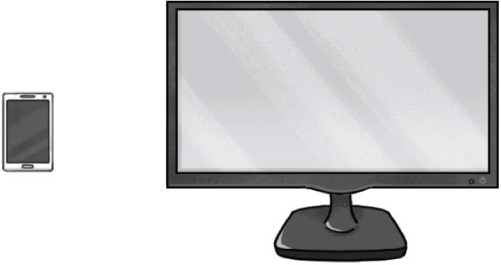
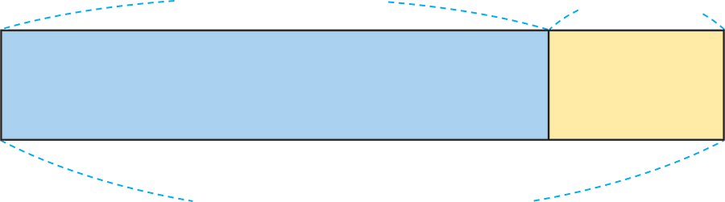
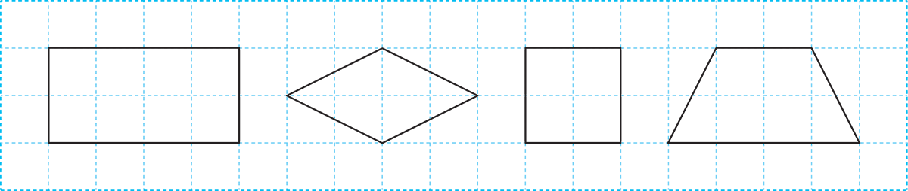

- 1
- 2
- 3
- 4
-
1 그림을 보고 알맞은 말에 표 하세요.
( )안을 클릭하세요. 휴대 전화 화면의 넓이는 모니터 화면의
넓이보다 더 ().넓습니다,좁습니다 -
2 안에 알맞은 수를 써넣으세요.
1 m 25 cm40 cmm1cm65 -
3 표시된 각이 예각이면 표, 둔각이면 표를 하세요.
-
 - 가
- 나
- 다
- 라
-
도형 가는 평행사변형입니다.
-
도형 나는 직사각형입니다.
-
- 가
- 나
- 다
- 라
-
도형 다는 정사각형입니다.
-
도형 가, 나, 다, 라는 모두 사다리꼴입니다.
-
-
4 평행한 두 직선 사이의 거리를 표시해 보세요.